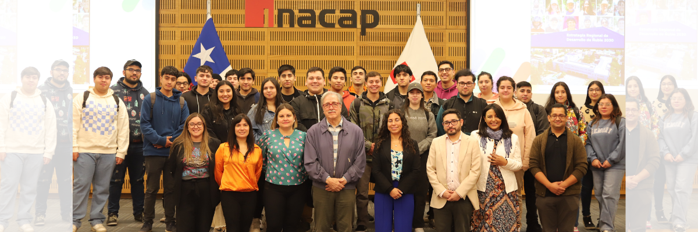
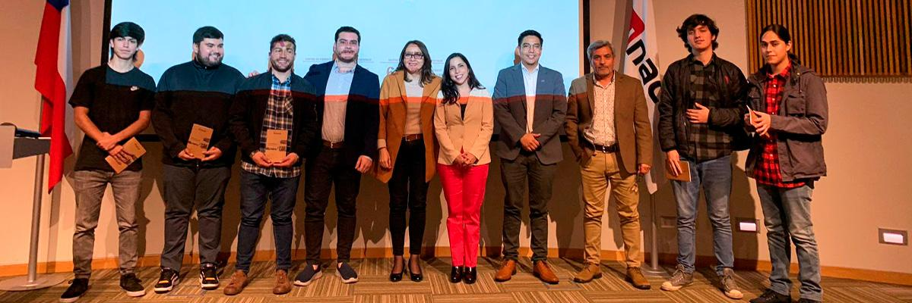

Asignaturas de Innovación y Emprendimiento INACAP
Desarrolla tu potencial innovador en cada etapa de tu formación
Desarrolla tu potencial innovador en cada etapa de tu formación
La estrategia de aprendizaje de las asignaturas de Innovación y Emprendimiento (I+E), desarrollada por la Vicerrectoría Académica busca que los estudiantes comprendan, experimenten y apliquen procesos de innovación y creación de negocios en conexión con su campo profesional.
Formar estudiantes con la capacidad de identificar oportunidades en su entorno, idear soluciones innovadoras y sostenibles, prototiparlas, validarlas y presentarlas con un enfoque aplicado a desafíos reales del entorno productivo y social. Esta estrategia impulsa además la creación y formalización de emprendimientos, fortaleciendo su conexión con el territorio y su aporte al desarrollo económico y social del país.
El modelo de aprendizaje en tres niveles integra teoría, práctica y especialización, desarrollando competencias progresivas en emprendimiento e innovación. Cada nivel ofrece herramientas aplicables al futuro profesional, fomentando la creación de soluciones a problemas reales.
En este nivel, se desarrolla la asignatura Creación de empresas, donde el alumno conoce los fundamentos del emprendimiento y diseña un primer modelo de negocio. Las actividades clave de esta asignatura son:
Este nivel, la asignatura Innovación en productos y servicios busca que el alumno aprenda a idear y validar una propuesta de valor innovadora. Las actividades clave son:
En este nivel, la asignatura Oportunidades en negocios innovadores propone al alumno la aplicación de innovación y emprendimiento en su área profesional. Las actividades clave son:
Cada sede cuenta con docentes capacitados y redes de apoyo para impulsar tu proyecto innovador.